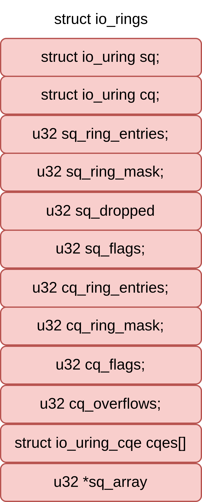

io_uring api
动机
探索scylladb因高效io带来的极速性能，然而并未用上io_uring这一技术。不过无所谓了，如果io_uring在其执行框架seastar前提出，应该就被用上了。
资料
nginx把读取文件的操作异步地提交给内核后，内核会通知IO设备独立地执行操作，这样，nginx进程可以继续充分地占用CPU。而且，当大量读事件堆积到IO设备的队列中时，将会发挥出内核中“电梯算法”的优势，从而降低随机读取磁盘扇区的成本。
IO模型

- libaio：linux kernel实现的native aio
- posix aio：glibc实现的aio
AIO的缺陷
但是它仍然不够完美，同样存在很多缺陷，还是以nginx为例，目前，nginx仅支持在读取文件时使用AIO，因为正常写入文件往往是写入内存就立刻返回，即只支持Direct write，效率很高，如果替换成AIO写入速度会明显下降。
- 仅支持direct IO。在采用AIO的时候，只能使用O_DIRECT，不能借助文件系统缓存来缓存当前的IO请求，还存在size对齐（直接操作磁盘，所有写入内存块数量必须是文件系统块大小的倍数，而且要与内存页大小对齐。）等限制，直接影响了aio在很多场景的使用。
- 仍然可能被阻塞。语义不完备。即使应用层主观上，希望系统层采用异步IO，但是客观上，有时候还是可能会被阻塞。io_getevents(2)调用read_events读取AIO的完成events，read_events中的wait_event_interruptible_hrtimeout等待aio_read_events，如果条件不成立（events未完成）则调用__wait_event_hrtimeout进入睡眠（当然，支持用户态设置最大等待时间）。
- 拷贝开销大。每个IO提交需要拷贝64+8字节，每个IO完成需要拷贝32字节，总共104字节的拷贝。这个拷贝开销是否可以承受，和单次IO大小有关：如果需要发送的IO本身就很大，相较之下，这点消耗可以忽略，而在大量小IO的场景下，这样的拷贝影响比较大。
- API不友好。每一个IO至少需要两次系统调用才能完成（submit和wait-for-completion)，需要非常小心地使用完成事件以避免丢事件。
- 系统调用开销大。也正是因为上一条，io_submit/io_getevents造成了较大的系统调用开销，在存在spectre/meltdown（CPU熔断幽灵漏洞，CVE-2017-5754）的机器上，若如果要避免漏洞问题，系统调用性能则会大幅下降。在存储场景下，高频系统调用的性能影响较大。
io_uring接口
用户态接口：
io_uring 的实现仅仅使用了三个用户态的系统调用接口：
（1）io_uring_setup：初始化一个新的 io_uring 上下文，内核通过一块和用户共享的内存区域进行消息的传递。
（2）io_uring_enter：提交任务以及收割任务。
（3）io_uring_register：注册用户态和内核态的共享 buffer。
使用前两个系统调用已经足够使用 io_uring 接口了。
数据结构

在 SQ，CQ 之间有一个叫做 SQEs 数组。该数组的目的是方便通过环形缓冲区提交内存上不连续的请求，即内核的响应请求的顺序是不确定的，导致在 SEQs 中插入新请求的位置可能是离散的。
SQ 和 CQ 中每个节点保存的都是 SQEs 数组的索引，而不是实际的请求，实际的请求只保存在 SQEs 数组中。这样在提交请求时，就可以批量提交一组 SQEs 上不连续的请求。

另外，由于上面所述的内存区域都是由 kernel 进行分配的，用户程序是不能直接访问的，在进行初始化的时候，相关初始化接口会返回对应区域的 fd，应用程序通过该 fd 进行 mmap，实现和 kernel 的内存共享。在返回的相关参数中，会有对应三个区域在该共享内存中对应位置的描述，方便用户态程序的访问。
实现思路
解决“系统调用开销大”的问题
针对这个问题，考虑是否每次都需要系统调用。如果能将多次系统调用中的逻辑放到有限次数中来，就能将消耗降为常数时间复杂度。
解决“拷贝开销大”的问题
之所以在提交和完成事件中存在内存拷贝，是因为应用程序和内核之间的通信需要拷贝数据，所以为了避免这个问题，需要重新考量应用与内核间的通信方式。我们发现，两者通信，不是必须要拷贝，通过现有技术，可以让应用与内核共享内存，用于彼此通信，需要生产者-消费者模型。
要实现核外与内核的一个零拷贝，最佳的方式就是实现一块内存映射区域，两者共享一段内存，核外往这段内存写数据，然后通知内核使用这段内存数据，或者内核填写这段数据，核外使用这部分数据。因此我们需要一对共享的ring buffer用于应用程序和内核之间的通信。
共享ring buffer的设计主要带来以下几个好处：
- 提交、完成请求时节省应用和内核之间的内存拷贝
- 使用 SQPOLL 高级特性时，应用程序无需调用系统调用
- 无锁操作，用memory ordering实现同步，通过几个简单的头尾指针的移动就可以实现快速交互。
一块用于用户传递数据给内核，一块是内核传递数据给用户，一方只读，一方只写。 - 提交队列SQ(submission queue)中，应用是IO提交的生产者（producer），内核是消费者（consumer）。 - 完成队列CQ(completion queue)中，内核是完成事件的生产者，应用是消费者。
内核控制SQ ring的head和CQ ring的tail，应用程序控制SQ ring的tail和CQ ring的head

那么他们分别需要保存的是什么数据呢？
假设A缓存区为核外写，内核读，就是将IO数据写到这个缓存区，然后通知内核来读；再假设B缓存区为内核写，核外读，他所承担的责任就是返回完成状态，标记A缓存区的其中一个entry的完成状态为成功或者失败等信息。
代码统计

数据分布
数据结构定义
各数据结构如下所示
1 | |
数据结构可视化
io_rings的数据分布
- struct io_rings的其他字段
- struct io_uring_cqe cqes[]
- u32 *sq_array // u32的数组，是指向sq_sqes的indice数组
如下图所示，可见io_uring_cqe和sq_array是相邻的
io_uring_sqe（真实的sqe）和io_rings不连续，如下图所示

用户只能得到io_uring_params，其中存放了io_sqring_offsets和io_cqring_offsets，根据这两个结构体，用户便可以访问io_rings中的sq_array和cqes，如下图所示

如上所示，用户可以通过mmap拿到io_rings，再加上用户可以访问io_uring_params的io_sqring_offsets和io_cqring_offsets，因此用户可以访问到io_rings的各个成员

为什么要有sq_off/cq_off，拿到io_rings后，直接访问成员不可以吗？难道是
mmap后，用户得到的io_rings只是一个地址，不是一个结构体
画图：两个 struct io_uring和sqes、cqes、sq_array的关系
sq_array其实并不是很适用，所以内核有个选项可以禁用sq_array，参考
基本上在任何位置只需要能持有io_ring_ctx和io_uring_params就可以找到任何数据所在的位置
关键流程
数据结构定义好了，逻辑实现具体是如何驱动这些数据结构的呢？使用上，大体分为准备、提交、收割过程。
有几个io_uring相关的系统调用：
1 | |
下面分析关键流程。
io_uring_setup
io_uring通过io_uring_setup完成准备阶段。
1 | |
flags中比较重要的有
IORING_SETUP_IOPOLL
让内核采用 Polling 的模式收割Block层的请求。在收割IO时，以忙等待的方式，而不是异步中断通知（Interrupt Request）的方式，即应用程序需要不断调用io_uring_enter轮询设备来检查io是否完成。因此相比于IRQ，会消耗更多的cpu资源，但IO操作的延迟更低。该种方式需要依靠打开文件的时候，设置为 O_DIRECT 的标记。我没弄懂- 猜测：
- 在IOPOLL启用时，会依靠轮询的方式收割block层的请求
- 如果在IOPOLL开启后，SQPOLL也开启了，那么用户不用阻塞，SQ thread会进行
IORING_SETUP_SQPOLL
- 内核额外启用一个内核线程，称为SQ线程。这个内核线程可以运行在某个指定的 core 上（通过 sq_thread_cpu 配置）。这个内核线程会不停的 Poll SQ，除非在一段时间内没有 Poll 到任何请求（通过 sq_thread_idle 配置），才会被挂起。SQ线程不仅会处理IO提交，也会处理IO完成事件
IORING_SETUP_SINGLE_ISSUER
- 只有一个线程提交任务
IORING_SETUP_DEFER_TASKRUN
- 在异步任务中，可能存在这种情况：在异步任务A提交后，该任务会加入到task work queue中，当cpu正在运行某个非常重要的任务B时，任务A可能从 task work queue中被调度出来，挤掉任务B的执行，导致这个非常重要的任务B的执行延迟增加，即执行时间增加。通过在io_uring_setup中设置IORING_SETUP_DEFER_TASKRUN，使得我们可以在用户调用io_uring_enter，并且带上IORING_ENTER_GETEVENTS时，才开始执行这些异步任务，例如任务A。这样就避免这些异步任务中断其他正在运行的任务。
代码分析
io_uring_setup系统调用的过程就是初始化相关数据结构，建立好对应的缓存区，然后通过系统调用的参数io_uring_params结构传递回去，告诉核外环内存地址在哪，起始指针的地址在哪等关键的信息。
需要初始化内存的内存分为三个区域，分别是SQ，CQ，SQEs。内核初始化SQ和CQ，SQ和CQ都是ring，此外，提交请求在SQ，CQ之间有一个间接数组，即内核提供了一个Submission Queue Entries（SQEs）数组。之所以额外采用了一个数组保存SQEs，是为了方便通过环形缓冲区提交内存上不连续的请求。SQ和CQ中每个节点保存的都是SQEs数组的索引，而不是实际的请求，实际的请求只保存在SQEs数组中。这样在提交请求时，就可以批量提交一组SQEs上不连续的请求。
io_uring_setup的逻辑可以以下分为三部分
- 创建一个上下文结构io_ring_ctx用来管理整个会话。
- 根据io_uring_params->sq_off/cq_off偏移量来实现SQ和CQ内存区的映射
- 错误检查、权限检查、资源配额检查等检查逻辑。
1 | |
如下图所示，io_uring_setup的主要功能由以下四个函数提供

io_ring_ctx_alloc，主要用来申请空间，初始化列表头、互斥锁、自旋锁等结构
io_allocate_scq_urings，初始化整个
struct io_rings *rings，包括SQ/CQ头尾指针、SQE、CQESQ、CQ头尾指针以及CQE都在struct io_rings *rings结构体中SQE则是在struct io_ring_ctx *ctx结构体中
io_sq_offload_create，根据用户通过
io_uring_setup传递的flags来配置io_uring的运行方式io_uring_get_fd 将
struct io_ring_ctx *ctx暴露给用户态访问
io_sq_offload_create
1 | |
io_uring_enter
代码分析
1 | |
flags
要理解这些flags，需要阅读io_uring_enter这个函数
比较重要的flags
-
轮询参数的配置
io_uring 大致可以分为默认、IOPOLL、SQPOLL、IOPOLL+SQPOLL 四种模式。如果需要轮询来检测IO请求是否完成，考虑开启IOPOLL；如果需要更高的实时性、减少系统调用开销，则考虑开启SQPOLL
- 只开启IORING_SETUP_IOPOLL，通过系统调用 io_uring_enter 提交任务和收割任务
- 只开启IORING_SETUP_SQPOL，提交任务无需系统调用，收割任务需要调用io_uring_enter。内核线程在一段时间无操作后会休眠，可以通过 io_uring_enter 唤醒
- IORING_SETUP_IOPOLL 和 IORING_SETUP_SQPOLL 都开启，内核线程会同时对 io_uring 的队列和设备驱动队列做轮询。在这种情况下，用户态程序不需要调用 io_uring_enter 来触发内核的设备轮询了，只需要在用户态轮询完成事件队列即可。
IO提交
io_uring提供了submission offload模式，使得提交过程完全不需要进行系统调用。当程序在用户态设置完SQE，并通过修改SQ的tail完成一次插入时，如果此时SQ线程处于唤醒状态，那么可以立刻捕获到这次提交，这样就避免了用户程序调用io_uring_enter。如上所说，如果SQ线程处于休眠状态，则需要通过使用IORING_SQ_NEED_WAKEUP标志位调用io_uring_enter来唤醒SQ线程。
在初始化完成之后，应用程序就可以使用这些队列来添加 IO 请求，即填充 SQE。当请求都加入 SQ 后，应用程序还需要某种方式告诉内核，生产的请求待消费，这就是提交 IO 请求。
IO 提交的做法是找到一个空闲的 SQE，根据请求设置 SQE，并将这个 SQE 的索引放到 SQ 中。SQ 是一个典型的 RingBuffer，有 head，tail 两个成员，如果 head == tail，意味着队列为空。SQE 设置完成后，需要修改 SQ 的 tail，以表示向 RingBuffer 中插入一个请求，当所有请求都加入 SQ 后，就可以使用相关接口 io_uring_enter（）来提交 IO 请求。
io_uring 提供了 io_uring_enter 这个系统调用接口，用于通知内核 IO 请求的产生以及等待内核完成请求。为了在追求极致 IO 性能的场景下获得最高性能，io_uring 还支持了轮询模式，轮询模式有两种使用场景，一种是提交 IO 过程的轮询模式，这是通过设置 IORING_SETUP_SQPOLL 来开启；另外一种是收割 IO 过程的轮询模式，通过设置 IORING_SETUP_IOPOLL 来开启。
提交 IO 的轮询机制
为了提升性能，内核提供了轮询的方式来提交 IO 请求，在初始化阶段通过设置 io_uring 的相关标志位 IORING_SETUP_SQPOLL 可以开启该机制。
在设置 IORING_SETUP_SQPOLL 模式下， 内核会额外启动一个内核线程（在io_uring_setup函数执行完后），我们称作 SQ 线程。这个内核线程可以运行在某个指定的 core 上（通过 sq_thread_cpu 配置）。这个内核线程会不停的 Poll SQ，除非在一段时间内没有 Poll 到任何请求（通过 sq_thread_idle 配置），才会被挂起。
当程序在用户态设置完 SQE，并通过修改 SQ 的 tail 完成一次插入时，如果此时 SQ 线程处于唤醒状态，那么可以立刻捕获到这次提交，这样就避免了用户程序调用 io_uring_enter 这个系统调用。如果 SQ 线程处于休眠状态，则需要通过调用 io_uring_enter，并使用 IORING_ENTER_SQ_WAKEUP 参数，来唤醒 SQ 线程。用户态可以通过 sqring 的 flags 变量获取 SQ 线程的状态。
在提交 IO 的时候，如果出现了没有空闲的 SEQ entry 来提交新的请求的时候，因为开启了IORING_SETUP_SQPOLL模式，应用程序不知道是否sqe entries被consume，即应用程序不知道什么时候有空闲，这时只能不断重试。为解决这种场景的问题，可以在调用 io_uring_enter 的时候设置 IORING_ENTER_SQ_WAIT 标志位，当提交新请求的时候，它会等到至少有一个新的 SQ entry 能使用的时候才返回。
1 | |
如果 flags 字段设置了 IORING_ENTER_GETEVENTS，调用会等待 min_complete 个 IO 完成后才返回。
min_complete 为 0，调用会立即完成，并返回已经完成的 IO，如果 min_complete 不为 0，并且 io_uring 设置了 IORING_SETUP_IOPOLL，那么调用通过忙等待的方式等待 min_complete 个 IO 完成事件，否则调用会挂起等待 IO 中断（或信号）
IO收割
收割 IO 的轮询机制
在设置了 IORING_ENTER_GETEVENTS 标志位后，kernel 会一直阻塞到至少有min_complete个事件完成才会返回。
patch
目前io_uring_create中，检查sq->entries和cq_entries的代码有冗余，将其写为一个函数，可以参考如下函数
1 | |
只支持direct IO
IO请求元数据开销较大
不够异步
API不友好
每一个IO至少需要两次系统调用才能完成（submit和wait-for-completion)，两次还是两种？
系统调用开销大
因为一次IO至少需要两次系统调用
io_poll
概念
内核通知用户事件是否完成有如下两种方式
- 内核中断通知用户
- io_poll，即用户轮询事件是否完成，适用于
- 高速设备，例如从机械硬盘到固态硬盘，事件处理时间较短，因此占用cpu较少
- IO请求流量较小
目前的不足
io_uring的增强
fastpoll
io_uring优势
- 使用方便
- 仅有三个系统调用
- 相关内核人员编写了对应的用户库liburing
- 通用性强，支持
- 传统IO（buffer IO + direct IO）
- epoll型编程，适用于网络IO
- 特性丰富，
- 高性能，IO请求overhead小
- 不用系统调用
io_uring使用ring buffer
共享ring buffer的设计主要带来以下几个好处：
- 提交、完成请求时节省应用和内核之间的内存拷贝
- 使用 SQPOLL 高级特性时，应用程序无需调用系统调用
- 无锁操作，用memory ordering实现同步，通过几个简单的头尾指针的移动就可以实现快速交互。
mmap两块内存，一块（SQ ring）用于核外传递数据给内核，一块（CQ ring）是内核传递数据给核外，一方只读，一方只写。内核控制SQ ring的head和CQ ring的tail，应用程序控制SQ ring的tail和CQ ring的head。
为什么用户和内核都可以操作两个ring的head和tail？
SQ ring和CQ ring和head和tail都用io_uring结构体存放存放在内核中，用户可以访问到这两个io_uring
重要特性
IORING_FEAT_FAST_POLL
用户只需要下发一次，不用被中断，事件可执行时，内核会帮忙执行，是这样吗？？？
目前io_uring不仅用于异步IO，更是一个异步编程框架，即只要是在用户态阻塞的操作，都可以想想是否可以用io_uring进行异步化，目前io_uring已经支持几十个系统调用
linux kernel之前看的代码
e38afaea62051bf540a624c01e45418d9332b6fe
v6.6